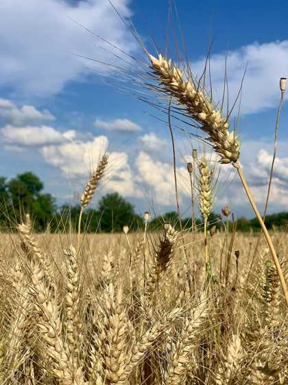
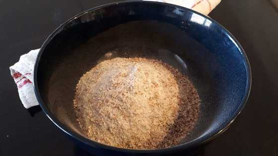

ベーグル・ハード系
看板はベーグルと紹介されています(取り扱い・価格は準備中)。

山口県下関市菊川町
ベルファミーユは、下関市菊川町の田園のなかで、パンとケーキを焼くお店です。
お店の由来・想い
紹介記事によると、オーナーは子どもの頃から、家族の誕生日やクリスマスにケーキを作るのが好きだったそうです。高校で調理師免許を取り、知人から注文ケーキを作るようになり、はじめはお母さまと二人三脚で営んでいたと紹介されています。福岡での修業を経てお店を開きました。
ご自身がアレルギー体質であることから、国産小麦と自家製酵母にこだわっているとのことです。店名はフランス語で「素敵な家族」を意味すると紹介されています。
菊川の田園風景を望む、個人宅の1階にあるお店で、看板商品はベーグルと紹介されています。
情報源: かんもんノート(2021年の紹介記事) / 紹介記事 / Instagram
記事は過去の掲載で、内容は変わっている場合があります。見出しの言い回しなどは制作側のイメージです。




パン・ケーキ
紹介記事で触れられていた内容のイメージです。写真はフリー素材で、お店の実際の商品ではありません。
看板はベーグルと紹介されています(取り扱い・価格は準備中)。

種類の豊富さが紹介されています(最新の品揃えは準備中)。

国産小麦と自家製酵母を使うと紹介されています。

ケーキやプリンも作られていると紹介されています(詳細は準備中)。
営業日・営業時間・価格・品揃え: 準備中(最新情報はInstagramをご覧ください)
口コミ
田んぼの道を走った先に、ぽつんとお店があって驚きました。やさしい味のパンでほっとしました。
ベーグルがもちもちで、家族みんなで分けて食べました。また買いに行きたいです。
素朴で食べやすく、朝ごはんにぴったりでした。ケーキも気になります。
上の3件は制作側が作ったイメージ例で、実際のお客様の声ではありません。
写真はフリー素材のイメージで、店舗の実際の様子ではありません。実際の写真は貴店ご提供のものに差し替えます。